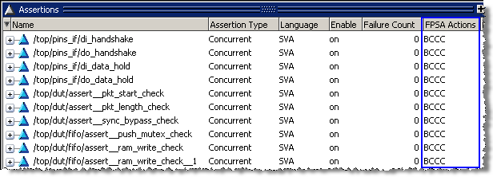
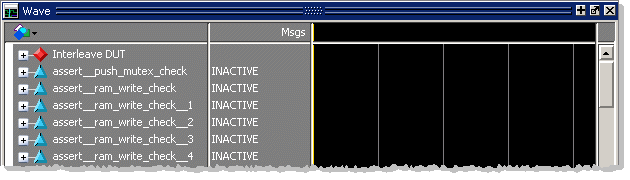

Now we will run the simulation with assertions
to demonstrate how assertions are used to speed debugging.
Procedure
- Rerun
the simulation with assertions.
- In the
Transcript window, enter the “resume” command at the VSIM(paused)> prompt.
- After
the design loads, configure all assertions to “Break on Failure.”
- The Assertions
window should open. If it does not, select .
Notice that the assertions are enabled for
both Pass and Failure for every assertion. This means that both
counts and visual indications in the Wave window will be maintained
for assertion Passes and Failures. It should be noted that this
is not the default behavior. To get this behavior the simulation
must be invoked with the “vsim -assertdebug” argument, as we have
done in this simulation. (This command is in the assert.do file)
- Click
the Assertions tab or the header bar of the
Assertions window to make it active. An “Assertions” menu selection
will appear in the menu bar.
- Make sure
none of the assertions are selected ().
- Execute
the following command:
assertion action -cond fail -exec break -r *
The FPSA
Action column now shows "B" for “break” on any assertion failure (Figure 1). (FPSA indicates Failures, Passes,
Starts, and Antecedents.) The column displays four letters. The
first letter indicates the action for Failures, the second is the
action for Passes, the third for Starts, and the fourth for Antecedents. (The
Actions are Continue, Break, Exit, and TCL.) If the FPSA Action
column is not displayed, you can view it by clicking the down arrow
at the left end of the column header bar and selecting FPSA
Action from the Configure Columns menu.
Figure 1. Assertions Set to
Break on Failure
- Add all
assertions related to /top/dut/fifo to the
Wave window.
- In the
Assertions window select /top/dut/fifo/assert_push_mutex_check.
- Press
and hold the Shift key and select /top/dut/fifo/assert_ram_read_check_10.
All assertions related to /top/dut/fifo should
be selected (highlighted in blue).
- Select from the Main menus. The selected assertions
will appear in the Wave window, as in Figure 2.
Figure 2. Assertions in Wave
Window 